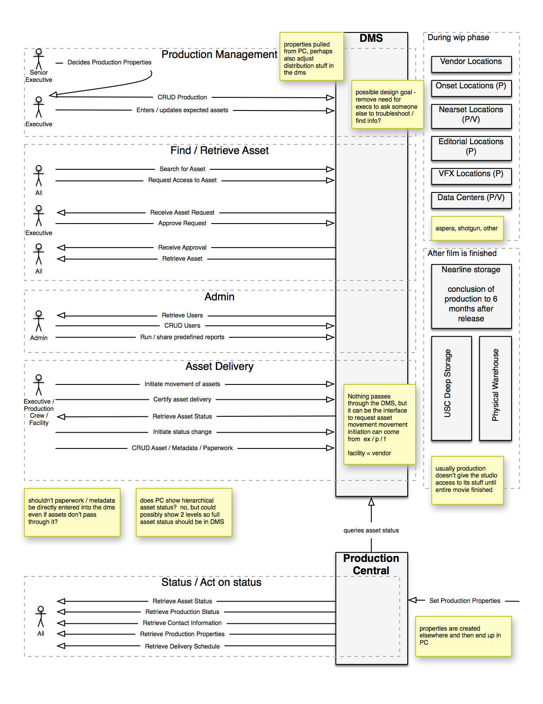
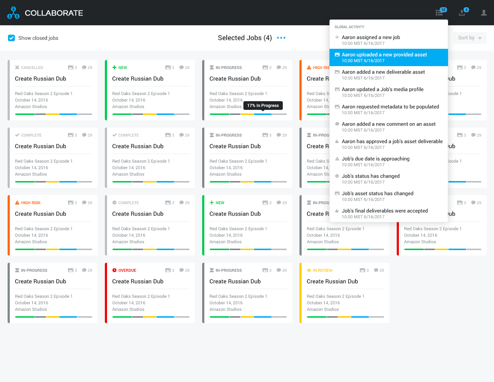

Overview
While I have experience creating a wide variety of UX Artifacts, I am generally not a fan of documentation as a means of knowledge transfer except at specific boundaries, such as the handoff of knowledge when the originator will not be easily accessible in the future. I much prefer high bandwidth communication for knowledge transfer. In that spirit, the list of artifacts generated on each project varies depending on the needs and circumstances of the project. Here is a general process that I follow on UX projects.
Discovery
This involves interviewing experts who are already familiar with the space, as well as business stakeholders. At this point I usually determine how much detail is necessary in the user model and get an initial idea of the most significant use cases for the project at hand. After iterating and validating the model I move on to interviewing the users. By the end of this process I have a good understanding of the users, most of the use cases, pain points, and stakeholder priorities. The user model can be in Persona level detail if helpful, and the use case detail level can be anywhere from brief to fully dressed.
user model
user model close up

Sequence Diagram

Creation
The first iterations happen in low fidelity, using stick figure wireframes and paper, and focusing on the main or highest risk interactions. As the iterations proceed, the specifics of each remaining interaction are fleshed out. I can approve and integrate creative into higher fidelity wireframe templates to quickly crank out artifacts that can double as comps. I can work with Creative Directors or Designers to to create a consistent design language and interaction model so that Engineeering can easily find anything from the standard drop shadows on control popups to detailed specifications on how notifications work.
If I'm interfacing with an Agile Product Management department I can deliver the interface in Epics. If I am wearing the Product Owner hat, I can decompose the Epic into Stories and schedule Sprints.
sample lo fi wireframe

sample hi fi wireframe

sample epic?
Completion / Team Interactions
Ultimately the success of a feature or product depend on both the users and stakeholders being satisfied. I can insert UX signoff as a pull request step to ensure nothing falls through the cracks while the engineering / UX interface is being developed. I am a proponent of QA placing themselves in the role of the user during their testing.